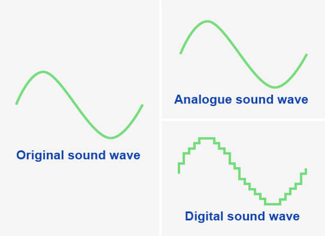

声音的数字化表示 / Digital Sound Representation
基本概念 / Basic Concepts
»
声音是模拟的,为了转换为数字形式,它需要被采样
Sound is analog, to convert to digital form it needs to be sampled
»
声波在设定的时间间隔内采样,测量振幅
Sound waves are sampled at regular intervals measuring amplitude
»
振幅无法精确测量,因此存储的是近似值
Amplitude cannot be measured precisely, so approximate values are stored

转换过程 / Conversion Process
在设定的时间间隔内确定声波的振幅
Determine amplitude at set time intervals
将该值转换为数字形式
Convert value to digital form
将声波的每个样本编码为一系列二进制数字
Encode each sample as a series of binary digits
一系列读数提供声波的近似表示
Series of readings gives approximate representation
关键特点 / Key Features
✓
采样率越高,重现的声音越精确
Higher sampling rate = more accurate sound reproduction
✓
采样分辨率越高,音质越好但文件越大
Higher sampling resolution = better quality but larger files
实际示例 / Practical Examples
•
CD音质: 44.1kHz, 16-bit
CD quality: 44.1kHz, 16-bit
•
高保真音质: 96kHz, 24-bit
High-fidelity: 96kHz, 24-bit